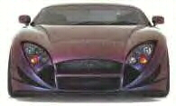
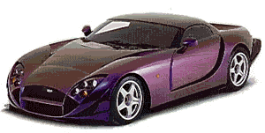
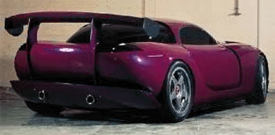

TVR Speed 12
(aka TVR 7/12)



Specs
Price |
$250,000?? |
Top Speed |
200+mph |
Acceleration |
|
Engine |
|
0-30mph |
N/A |
Type |
V12 w/ Variable intake timing, Quad cam? |
0-60mph |
2.8sec? |
Displacement |
7.7L(7730cc) !! |
0-100 |
N/A |
Power |
760hp@7250rpm (!!) |
1/4 mile |
N/A |
Torque |
650 lbs-ft@5750rpm (!!) |
Weight |
N/A |
Handling |
|
Gas mileage |
|
Skidpad |
N/A |
City |
N/A |
600ft slalom |
N/A |
Highway |
N/A |
Powertrain |
Front engined, rear wheel drive, 6 speed manual |
(? = incomplete data or unverified info, N/A = info Not Available)
Beyond the specs:
The amazing TVR Speed 12 (a.k.a. 7/12), after seeing what a TVR Cerbera could do with a 4.5 liter V8 imagine what this beast could do with its gigantic 7.7 liter V12! With a Viper GTS-R challenging 650 lbs.-ft of earth shattering torque this beast easily jumps to 60 in a reported 2.8 sec and with its awesome 760 horsepower its numbers beat any other Le Mans car except in torque. This car comes in a street version like all Le Mans cars (its not yet a Le Mans racecar so I placed in two sections), and is rumored to be available at an amazing bargain price of around $250,000! This car was intended to compete with the awesome Porsche 911 GT-1, the Mclaren F1 GTR, and the new Mercedes CLK-GTR. With that as its goal and it wonderful engine and lightweight TVR chassis it is guaranteed to easily do more than 200mph and will certainly beat the Mclaren F1 on the road. This car will not likely be sold in large numbers (most Le Mans cars have as few as 10 street legal versions) so you had better make sure TVR gets your order if you want one. As you can see from the specs above not much info is available, but I will keep you posted.
~Oracle